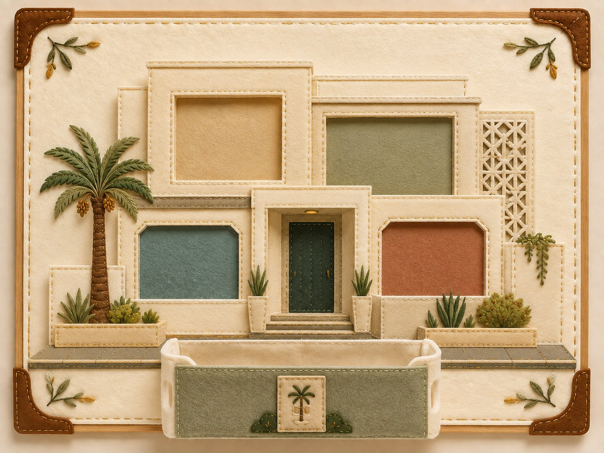
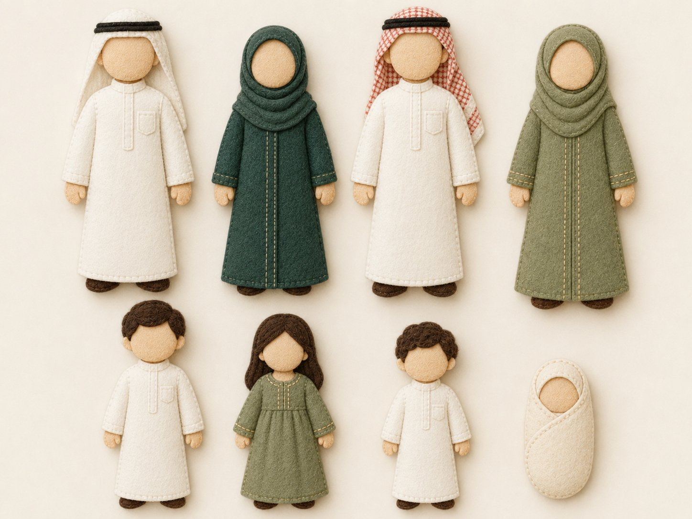
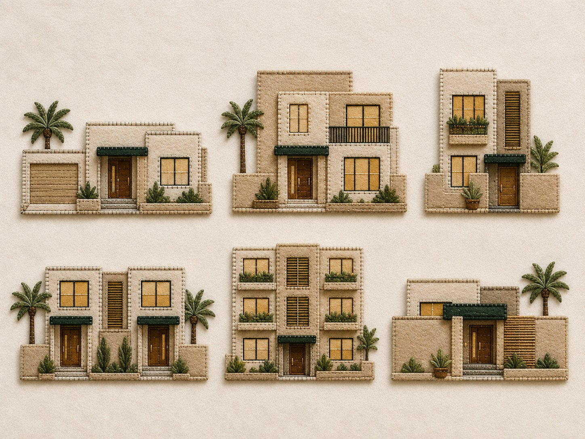
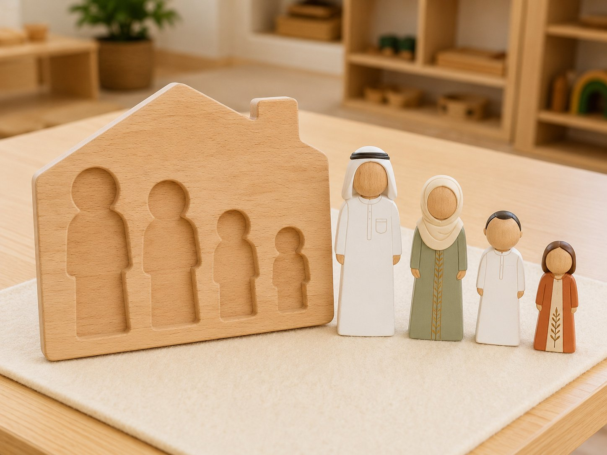
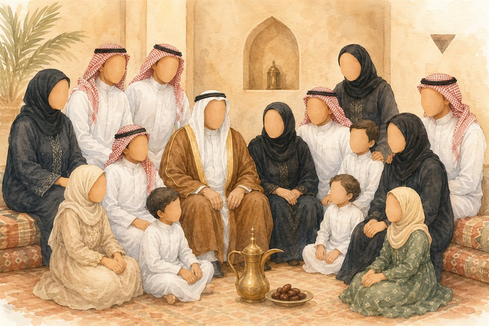

موادُّ النشاط المصاحب وأدواتُه: بطاقات مصوّرة لأفراد العائلة · صندوق «بيتي» · لوحة عرض؛ وبطاقاتُ النشاط تُطبَع وتُغلَّف. (مفصّلةٌ في تبويب «النشاط»)
ما تحتاجين معرفته
مدارُ اللقاء: العائلةُ نعمةٌ من الله للسكن والمودّة، وقد جعل الناسَ شعوبًا وقبائلَ ليتعارفوا لا ليتفاخروا.
تفسيرُ ﴿وَجَعَلْنَاكُمْ شُعُوبًا وَقَبَائِلَ لِتَعَارَفُوا﴾:«خلق بني آدم من أصل واحد وجنس واحد… وجعلهم ﴿شُعُوبًا وَقَبَائِلَ﴾؛ أي: قبائل صغارًا وكبارًا، وذلك لأجل أن يتعارفوا.» والكرمُ بالتقوى ﴿إِنَّ أَكْرَمَكُمْ عِندَ اللَّهِ أَتْقَاكُمْ﴾.المصدر: تيسير الكريم الرحمن، عبد الرحمن السعدي — ص٨٠٢.
ثمرةُ اللقاء: أن يشكر الطفلُ نعمةَ عائلته، ويعمُرها بالمودّة، ويعلمَ أنّ الفضلَ بالتقوى.
إضاءةٌ تربويّة
كيف تُقرّب المعلمةُ معنى نعمة العائلة لطفل الروضة — لا معلوماتٌ تُلقى في الحلقة.
من محسوس الطفل: مَن يحبّني ويرعاني في بيتي؟ — لِنعدّ أفرادَ العائلة نعمةً.
لا مفاخرةَ بالنسب: كلُّ عائلةٍ نعمةٌ، والعبرةُ بالتقوى لا بالمال أو الحسب.
النعمةُ من الله: العائلةُ نعمةٌ تُشكَر، ولا يُحتقَر نسبُ أحد.الدليل: ﴿وَمَا بِكُم مِّن نِّعْمَةٍ فَمِنَ اللَّهِ﴾ [النحل ٥٣].
الكرمُ بالتقوى: ﴿إِنَّ أَكْرَمَكُمْ عِندَ اللَّهِ أَتْقَاكُمْ﴾ — لا تفاخرَ بالأنساب.الدليل: ﴿إِنَّ أَكْرَمَكُمْ عِندَ اللَّهِ أَتْقَاكُمْ﴾ [الحجرات ١٣]. المرجع: تيسير الكريم الرحمن للسعدي، ص٨٠٢.
صلةُ الرحم: من طاعة الله برُّ الأقارب وصلتُهم.الدليل: «مَن كان يؤمن بالله واليوم الآخر فليصِلْ رحمَه» [متّفق عليه].
حدُّ ما يُقال: «عائلتي نعمةٌ من الله؛ أشكرُه وأصِلُ أهلي، والكريمُ أتقانا».
ثلاثة أخطاء شائعة في هذا اللقاء
١ · المفاخرةُ بالأنساب
الخطأ: تفضيلُ عائلةٍ على أخرى يجرحُ بعضَ الأطفال.
العلاج: كلُّ عائلةٍ نعمةٌ، والكرمُ بالتقوى.
٢ · إغفالُ نسبة النعمة لله
الخطأ: الحديثُ عن العائلة دون شكر المُنعِم.
العلاج: «عائلتي نعمةٌ من الله» في كلّ موضع.
٣ · صورُ ذوات الأرواح بملامح
الخطأ: رسمُ أفراد العائلة بوجوهٍ وملامح.
العلاج: وجوهٌ بلا ملامح وفق خصوصيّة المنهج.
سؤال التركيز
لماذا العائلةُ نعمةٌ نشكرُ اللهَ عليها، مهما اختلفت؟
بوصلةُ اللقاء: تفتح به المعلمةُ الحوار وتعود إليه عند الغلق. يقيسه سؤالُ التغذية الراجعة الأول ومؤشراتُ النجاح.
جوهر اللقاء
العائلةُ نعمةٌ عظيمةٌ من الله؛ العوائلُ تختلف في شكلها والجميعُ في نعمة، فاللهُ يسخّر لكلِّ طفلٍ من يرعاه — كما رعى نبيَّه ﷺ في صغره — فنحمدُ اللهَ ونشكرُه على نعمة العائلة.
تظهر موسّعةً في «المعنى المركزي» بسير اللقاء؛ لو لم يبقَ من الدرس إلا جملةٌ فهي هذه.
ورقة التدريس السريعة — خطوات اللقاء أثناء الدرس
① تهيئة وبداية اللقاء ٨ د
إشارة بدء اللقاء: أنشودة «العلم هو النور الهادي»، ويتعرّف الأطفال على اللقاء بأنفسهم.
تذكير الأطفال بقوانين الفصل الخمسة.
مراجعة سريعة وافتتاح وحدة العائلة بعرض صورة العائلة.
② بناء وسير اللقاء ١٤ د
مفهوم العائلة وأفرادها (أب · أم · إخوة · جد · جدة).
العوائل مختلفة والجميع في نعمة؛ الله يرسل لكل طفل من يرعاه.
قصة رعاية الله لنبيّه ﷺ في صغره.
المعنى المركزي + تصحيح فهم الطفل + الجملة الختامية.
③ إغلاق وتقويم ٨ د
النشاط المصاحب: تصنيف صور أفراد العائلة «من يعيش معي».
أسئلة التغذية الراجعة.
دعاء كفارة المجلس وختام اللقاء.
ربط الأسرة: يتحدّث الطفل مع أسرته عن أفراد عائلته، ويصِلون رحمًا، ويقولون معًا: «الحمد لله على نعمة العائلة».
ورقةٌ مرجعية سريعة أثناء الدرس — الخطوات فقط دون الأهداف والزيادات؛ والنصّ الكامل في تبويب «دليل الدرس كامل».
مسار بداية اللقاء
① تهيئة
إشارة بدء اللقاء
السلام عليكم ورحمة الله وبركاته يا طلاب العلم المباركين. نستمع الآن إلى إشارة بدء اللقاء لنعرف ماذا سيكون لقاؤنا.
الإشارة الثابتة: تُشغّل المعلمة أنشودة العلم هو النور الهادي علامةً ثابتةً لبدء لقاء علّمني ربي (لا تُسمّي المعلمة اللقاء)؛ فيتهيّأ الأطفال للجلوس والإنصات، ويتعرّفون بأنفسهم على اللقاء من إشارته.
فيديو إشارة بدء لقاء علّمني ربي — تستعين به المعلمة لضبط نغمة الإشارة (نفس إشارة المادة في جميع الوحدات).
الحزمُ مع الهدوء: تُدير المعلمةُ اللقاءَ بحزمٍ هادئ — صوتٌ لطيفٌ، وحدودٌ واضحة، وابتسامةٌ محتسبة — دون شدّةٍ تُنفّر ولا فوضى تُشتّت.
قوانين الفصل
🧹 أحافظ على نظافة فصليإماطة الأذى عن الطريق صدقة.
🔔 أستمع وأنصتفلا أقاطع الآخرين.
🔒 أحفظ لساني ويديالمسلم من سلم المسلمون من لسانه ويده.
🪑 أجلس جلسة صحيحةفي المساحة المخصصة لي.
💬 أرفع يدي للمشاركةالسؤال للجميع والإجابة لمن تختاره المعلمة.
مراجعة سريعة وافتتاح الوحدة
هذا أول لقاء في وحدة جديدة؛ تُهيّئ المعلمة الأطفال بسؤال: ما الوحدة التي أنهيناها؟ ثم تقول: «اليوم نبدأ وحدة جديدة… انظروا ماذا سأعرض لكم» تمهيدًا لعرض صورة العائلة.
سير اللقاء
② بناء وسير
اكتشاف الوحدة: تعرض المعلمة صورة عائلة وتسأل: ماذا ترون؟ من هؤلاء؟ ماذا يفعلون؟ ثم تقول: «هذه هي العائلة… إذن وحدتنا الجديدة هي: وحدة العائلة».

الصورة التي تعرضها المعلمة هنا
من أفراد العائلة؟ تعرض صور الأب والأم والإخوة والأخوات والجد والجدة، وتوضّح: «العائلة كل من يجمعنا بهم بيتٌ واحد أو صلةُ رحم».
العوائل مختلفة والجميع في نعمة: «هل كل الناس يعيشون مع الأب والأم؟» — تبيّن أن منهم من يعيش مع أمه، أو أبيه، أو جدّه… ولكن الجميع في نعمة لأن الله يرسل من يرعاهم.
الربط بقصة النبي ﷺ: تنتقل إلى القصة المبسّطة (بالأسفل) لترسيخ المعنى.
المعنى المركزي: العائلة نعمة عظيمة من الله؛ العوائل تختلف في شكلها والجميع في نعمة، فالله يسخّر لكل طفل من يرعاه — كما رعى نبيّه ﷺ في صغره — فنحمد الله ونشكره على نعمة العائلة.
تصحيح فهم الطفل: ليست العبرة بعدد أفراد العائلة ولا بمن يعيش مع الطفل؛ فبعض الأطفال يعيش مع أمّه أو أبيه أو جدّه، والجميع في نعمة. ولا نقارن عائلتنا بغيرها ولا نحزن؛ فالله يرسل لكل طفل من يرعاه ويحبّه — وهذه نعمة نشكر الله عليها.
الجملة الختامية: «علينا أن نحمد الله ونشكره على نعمة العائلة» — يردّدها الأطفال.
قصة النبي ﷺ مع عائلته (سرد قصصي مبسّط · ضمن سير الدرس)
«النبي ﷺ عندما كان صغيرًا… توفّي والده قبل أن يولد، فسخّر الله له أمه لتعتني به… ولمّا توفّيت أمه، سخّر الله له جدّه عبد المطلب وكان يحبّه كثيرًا… ولمّا مات جدّه، سخّر الله له عمّه أبا طالب وكان يحبّه ويدافع عنه».
ثم تقول المعلمة: «حتى لو لم يكن معنا كل أفراد عائلتنا… فالله يرسل لنا من يعتني بنا، وهذه نعمة عظيمة».
الوسائل والصور المعروضة في اللقاء
بطاقات نشاطأفراد العائلة٦ بطاقات
أفراد العائلةللطباعة من زرّ النشاط
لوحة الجوخ · العائلة في البيتالوسيلة الأساسية: تُعرَض القطع وتُرتَّب عليها

أفراد العائلة · قطع الجوخيسمّيها الطفل ويصنّفها — بلا ملامح

بيوت الجوخ المختلفةبيوتٌ مختلفة والجميع في نعمة الله
من الذي وهبنا العائلة وسخّر لنا من يرعانا؟الله وحده هو الذي وهبنا العائلة وسخّر لكلّ طفلٍ من يرعاه ويحبّه، فنحمده ونشكره على نعمته.
هل كل العائلات متشابهة؟ وماذا نقول لمن يعيش مع أحد والديه أو مع جدّه؟العوائل مختلفة والجميع في نعمة؛ فلا نقارن عائلتنا بغيرها ولا نحزن، لأن الله يرسل لكلّ طفلٍ من يرعاه — وهذه نعمة نشكر الله عليها.
ماذا نقول شكرًا لله على نعمة العائلة؟نقول: «الحمد لله على نعمة العائلة»، ونُحسن إلى أهلنا ونصِل رحمنا.
تختار المعلمة سؤالين أو ثلاثة بحسب وقت الأطفال، وتُرشد الطفل إلى الإجابة برفق، ثم تدعو: «اللهم احفظ عائلتنا واجعلنا لهم خير مُعين». المعيار: ٣ إجابات صحيحة على الأقل.
النشاط المصاحب
بطاقات «أفراد العائلة» بهويّة غرس (بالكلمة، بلا صور) — تُطبع وتُقصّ؛ يختار الطفلُ بطاقةً ويُسمّي فردَ العائلة 🖨️ للطباعة الكبيرة ↗
علّمني ربيأفراد العائلةبطاقات نشاط
أُسمّي فردَ العائلةأب
أُسمّي فردَ العائلةأم
أُسمّي فردَ العائلةأخ
أُسمّي فردَ العائلةأخت
أُسمّي فردَ العائلةجد
أُسمّي فردَ العائلةجدة
تصنيف صور أفراد العائلة
الهدفأن يميّز الطفل أفراد عائلته ويعبّر عمّن يعيش معه، ويشكر الله على نعمتهم.
الأدواتبطاقات مصوّرة لأفراد العائلة · صندوق «بيتي» · لوحة عرض.
صور النشاط وأدواته
قطع أفراد العائلة (جوخ)يصنّفها الطفل ويسمّيها — بلا ملامح
لوحة الجوخيثبّت الطفل القطع عليها ويرتّب عائلته
خطوات التنفيذ
توزّع المعلمة قطع أفراد العائلة (الجوخ) على الأطفال.
يسمّي كل طفل من في قطعته (أب / أم / أخ / أخت / جد / جدة).
يثبّت الطفل على لوحة الجوخ من يعيش معه فعلًا، ويذكرهم بصوته.
تختم المعلمة: «كلٌّ منّا في نعمة؛ الحمد لله على عائلتنا».
أسئلة أثناء النشاط
من يعيش معك في المنزل؟
من هو الجد؟ ومن هي الجدة؟
ماذا نقول شكرًا لله على عائلتنا؟
اختيارات حسب حاجة الطفل
الخجول: يبدأ ببطاقة واحدة، ويُثنى عليه بـ«جزاك الله خيرًا».
السريع: يذكر أفرادًا من العائلة الكبرى (عم · خال).
كثير الحركة: يوزّع البطاقات على زملائه بدورٍ منظّم.
دعاء ختام النشاطاللهم احفظ عائلتنا واجعلنا لهم خير مُعين، وارزقنا برّهم وشكرك على نعمتهم.
اختيارات الأنشطة الإضافية
تلبية الاحتياجات الفرديةالبطيء: صور مكرّرة وإعادة السؤال بلطف. الخجول: «جزاك الله خيرًا» عند أول مشاركة. النشيط: يحمل بطاقة أحد أفراد العائلة.
التوسيع والإثراءبيتي: يذكر مع أسرته نعمة العائلة ويقول: «الحمد لله». فني: رسم بيت العائلة (بلا وجوه) وكتابة: عائلتي نعمة.
اقتراحات للتكرار بطاقات مصوّرة للمراجعة السريعة 3 دقائق في مطلع الحصة قبل درس الآداب.
كفارة المجلس · خاتمة اللقاء
سبحانك اللهم وبحمدك، أشهد أن لا إله إلا أنت، أستغفرك وأتوب إليك.
العلاقة التكاملية لهذا اللقاء
الفكرة الناظمة لليوم: العائلة نعمة من الله تستوجب الشكر وحسن التعامل.
سؤال اليوم: من الذي وهبني عائلتي وسخّر لي من يرعاني؟
هذا اللقاء: علّمني ربي — مفهوم العائلة.
كيف يتكامل هذا اللقاء مع بقية دروس اليوم والوحدة؟
التعليمُ التكامليّ = يعيشُ الطفلُ المعنى الواحد في كلّ حصص يومه؛ فلا يكون درسُ «مفهوم العائلة» جزيرةً منعزلة، بل خيطًا يربط القرآنَ واللغةَ والأدبَ والسنّةَ في تجربةٍ واحدة. وهذه جسورُ الربط العمليّة:
كتابي المنير — سورة الانفطار
في كتابي يتفكّرُ الطفلُ أنّ اللهَ خلق الإنسانَ وأتقن تسويتَه؛ فالذي أنعم بنعمة الخلق هو نفسُه الذي وهب الطفلَ عائلةً تحتضنُه، فتتّسعُ دائرةُ الشكر من نفسِه إلى أسرته. حركةُ المعلمة: «مَن خلقكَ وأحسنَ خلقَكَ هو مَن وهبكَ أمًّا وأبًا يحبّانك… فلنشكرْه على النعمتين».
لساني عربي
كلماتُ اليوم «أُمّ · أَب · أُسْرة» يقرؤها الطفلُ بالحركات في لساني؛ فتصيرُ اللغةُ أداةً يعبّرُ بها عن نعمة العائلة ويسمّي أفرادَها. حركةُ المعلمة: «هذه كلمةُ (أُسْرة)… مَن يقرؤها ويذكرُ أفرادَ أسرته؟».
أدب واقتداء
ما عرفه الطفلُ عن عائلته يتحوّلُ سلوكًا في الأدب: يُلقي التحيّةَ على أهله ويخاطبُهم بلطف. حركةُ المعلمة: «كيف نُدخِلُ السرورَ على أمّنا وأبينا بكلمةٍ طيّبةٍ حين نلقاهم؟».
قال رسولي
هديُ النبيّ ﷺ في الرحمة بالأهل وصلةِ الأرحام يعمّقُ مفهومَ العائلة؛ فالبيتُ المسلمُ يقومُ على المودّة. حركةُ المعلمة: «نبيُّنا ﷺ كان أرحمَ الناس بأهله… كيف نكونُ مثلَه في بيتنا؟».
الأركان والأناشيد
في ركن اللعب ونشيدِ الوحدة يثبّتُ الطفلُ معنى العائلة باللعب الحرّ (تمثيلُ أدوار أفراد الأسرة) وترديدِ النشيد. حركةُ المعلمة: ربطُ نشاط الركن بعبارة اليوم عن نعمة العائلة.
فكرة للربط السريع
اسألي: كيف يخدم هذا اللقاء معنى اليوم؟ وما السلوك أو العبارة التي سيخرج بها الطفل إلى اللقاء التالي (آداب التعامل مع أفراد العائلة)؟
التقويم في منهج غرس القيم ثلاثي المراحل — يرصد الطفل قبل الدرس وأثناءه وبعده.
التقويم القبلي
من يعيش معك في المنزل؟
هل تعرف معنى العائلة؟
هل كل العائلات متشابهة؟
التقويم التكويني
متابعة تفاعل الأطفال أثناء عرض الصور
من هم أفراد العائلة؟
هل كل الأطفال يعيشون مع الأب والأم؟
ماذا نفعل حين نرى نِعَم الله علينا؟
التقويم النهائي
ما معنى نعمة العائلة؟
أين تجتمع العائلة؟
مع من كان يسكن النبي ﷺ وهو صغير؟
المعيار: 3 إجابات صحيحة على الأقل
مؤشرات النجاح
المؤشر الوجداني
ظهور محبة وامتنان عند الحديث عن الأهل، وقول «الحمد لله» على نعمة العائلة بصدق.
المؤشر المعرفي
الإجابة الصحيحة على 3 أسئلة من أسئلة التقويم النهائي.
المؤشر السلوكي
الجلوس الهادئ والاستماع دون مقاطعة، والمشاركة باللطف.
المؤشر التطبيقي
تصنيف صور أفراد العائلة تصنيفًا صحيحًا، والتعبير عمّن يعيش معه.
ماذا تفعل المعلمة بعد أن تقرأ مؤشّرات النجاح: كيف تحكم، وماذا تصنع لمن لم يبلغ، ولمن تجاوز، وإن تعذّرت الوسيلة. لا يُعاد الدرس — يُعالَج المؤشّر الذي أخفق وحدَه.
ما الذي أبحث عنه؟ — سلّم الحكم
ثلاثة مستويات موصوفة لكلّ مؤشّر، فيتحوّل الحكم من «تحقّق / لم يتحقّق» إلى ملاحظةٍ موصوفة. تُملأ بعلامةٍ سريعة في سجلّ ملاحظة الوحدة.
المؤشّر الوجدانيّ
مبتدئ
يتحدّث عن أهله دون أثرٍ وجدانيٍّ ظاهر.
نامٍ
يُظهر محبّةً لأهله، ويقول «الحمد لله» على نعمة العائلة بالتذكير.
متمكّن
تظهر عليه محبّةٌ وامتنان عند الحديث عن أهله، ويحمد الله على نعمة العائلة بصدقٍ بلا تلقين.
المؤشّر المعرفيّ
مبتدئ
يسمّي بعض أفراد أسرته دون ربطها بنعمة الله.
نامٍ
يعرف أنّ العائلة نعمةٌ من الله، ويذكر مَن يعيش معه.
متمكّن
يجيب صحيحًا عن أسئلة التقويم، ويعرف أنّ الله سخّر لكلّ طفلٍ من يرعاه.
المؤشّر السلوكيّ
مبتدئ
يقاطع ويحتاج تذكيرًا للجلوس والإنصات.
نامٍ
يجلس ويستمع أغلب الوقت.
متمكّن
يجلس هادئًا ويستمع دون مقاطعة، ويشارك بلطف.
المؤشّر التطبيقيّ
مبتدئ
يصنّف بطاقات الأسرة بمساعدة.
نامٍ
يصنّف أكثر بطاقات أفراد العائلة تصنيفًا صحيحًا.
متمكّن
يصنّف أفراد العائلة تصنيفًا صحيحًا، ويعبّر عمّن يعيش معه.
إن لم يتحقّق المؤشّر
نشاطٌ قصير مربوطٌ بالمؤشّر الذي أخفق تحديدًا لا بالدرس عمومًا — يُنفَّذ في الركن أو في أوّل ثلاث دقائق من اللقاء التالي.
المعرفيّ · ٥ دقائق في الركن
الأدوات: بطاقتان فقط من بطاقات أفراد العائلة (أمّ · أب). لا يُعرض الصندوق ولا سائر البطاقات.
تعرض المعلمة بطاقةً وتسأل: «مَن هذا في العائلة؟ ومَن الذي وهبك عائلتك؟» وتنتظر: «اللهُ وهبني عائلتي».
تضيف الثانية بعد أن يثبت الأولى، وتسمّي كلَّ فردٍ معه.
تختم بجملةٍ يردّدها: «العائلةُ نعمةٌ من الله، فالحمد لله».
علامة النجاح: يسمّي فردين ويُسند نعمة العائلة إلى الله. ثمّ يُعاد إلى اللعب الحرّ.
الوجدانيّ · ٣ دقائق في الانتقال بين اللقاءات
تسأل المعلمة الطفل: «مَن أكثرُ مَن تحبّه في عائلتك؟» وتنصت له بحبّ.
تقول هي أوّلًا: «الحمد لله على نعمة العائلة»، ثمّ تنتظر — ولا تُلزمه.
تُثني على كلّ تعبيرٍ صادقٍ عن محبّة الأهل.
علامة النجاح: أن يعبّر عن محبّته لأهله ويحمد الله على نعمتهم مرّةً بلا تلقين.
للطفل المتقدّم
سؤالٌ أعمق
«العوائلُ تختلف في شكلها وعددها — فمن الذي جعل لكلّ طفلٍ مَن يرعاه ويحبّه؟» فتُقرّب أنّ اللهَ يسخّر لكلّ طفلٍ من يرعاه، كما رعى نبيَّه ﷺ في صغره.
ربط مباشر بالدرس: خلاصة اللقاء أن نحمد الله على نعمة العائلة.
٥ · الانتظار وضبط النفس
الموقفطفل يقاطع زميله أثناء حديثه عن عائلته.
الرد المقترح«انتظر دورك يا بطل، ستُخبرنا عن عائلتك بعد قليل. حسن الاستماع من أدب المجلس. جزاك الله خيرًا».
القيمةضبط النفس — احترام الآخرين — أدب الإنصات.
ربط بالدرس: كما نحترم أفراد عائلتنا، نحترم زملاءنا في المجلس.
القيمة تترسّخ حين تُعاش في البيت كما تُتعلَّم في الفصل — هذه التهيئات يُطبّقها ولي الأمر قبل الدرس وبعده.
١ · تهيئة وجدانية
أيُحدّث ولي الأمر طفله عن أفراد عائلته بمحبة، ويذكّره أن العائلة نعمة من الله.
بيقول له قبل النوم: «الحمد لله الذي جعل لنا عائلة تحبّنا وترعانا».
← يربط الطفل بين الدرس ومشاعره تجاه أسرته في حياته الفعلية.
٢ · تهيئة معرفية
أيقرأ مع طفله ﴿وَبِالْوَالِدَيْنِ إِحْسَانًا﴾ ويشرح أن الله أوصى بالأهل خيرًا.
بيسأله بلطف: «من هم أفراد عائلتنا؟ من الجد؟ من الجدة؟»
← يرسّخ المفهوم قبل سماعه في الصف.
٣ · تهيئة حسية
أيستعرض مع طفله صور العائلة، ويسمّي كل فرد: هذا جدّك… هذه جدّتك…
بيزور معه أحد الأقارب أو يتصل به لصلة الرحم.
← يعيش الطفل المعنى واقعيًا قبل عرضه في الصف.
٤ · تهيئة عملية بسيطة
أيجهّز مع الطفل بطاقة أو رسمًا بسيطًا لأفراد العائلة (بلا وجوه) ليحمله إلى الصف.
بيساعده على حفظ أسماء أفراد عائلته.
← مشاركة الأسرة تعطي الطفل حافزًا للعرض أمام زملائه.
٥ · تهيئة سلوكية
أيشجّع طفله على احترام الكبير في البيت والرحمة بالصغير.
بيذكّره: «خيركم خيركم لأهله».
← يصبح السلوك اليومي نفسه جزءًا من الدرس.
٦ · تهيئة بالقصص
يحكي قصة قصيرة عن رعاية الله لنبيّه ﷺ في صغره بعد فقد والديه، ليتعلّم الطفل أن الله لا يترك عباده بل يرسل لهم من يعتني بهم.
← القصة تزرع الرضا والشكر معًا في وجدان الطفل.
أسئلة تطرحها على طفلك
ما اسم وحدتنا الجديدة في المركز؟
من هم أفراد عائلتنا؟
لماذا العائلة نعمة من الله؟
من رعى النبي ﷺ بعد وفاة والديه؟
ماذا نقول شكرًا لله على عائلتنا؟
بطاقة العودة من البيت
مهمّةٌ صغيرةٌ تخرج مع الطفل إلى البيت وتعود معه في اللقاء التالي، فتصل تعلّمَ اليوم بالغد وتُشرك الأسرة.
ما يفعله في البيت: يذكر أفرادَ عائلته ومَن يرعاه منهم، ويقول: «الحمد لله على نعمة العائلة».
ما يعود به: يذكر لزملائه فردًا من عائلته يرعاه، ومَن أنعم عليه بها.
استثمارها في افتتاح الغد: تفتتح المعلمةُ اللقاءَ التالي بسؤال: «مَن يرعاك في عائلتك؟ ومَن أنعم علينا بالعائلة؟».
‹
أولياء أمور الفصل
غرس القيم · دليل المعلمة
اليوم
بسم الله الرحمن الرحيم 🌿
السلام عليكم ورحمة الله وبركاته
📖 بدأ طفلكم الكريم اليوم وحدة «العائلة» في مادة علّمني ربي. تعلّم أن العائلة نعمة عظيمة من الله، وأن العوائل مختلفة والجميع في نعمة؛ لأن الله يرسل لكل طفل من يرعاه — كما رعى نبيّه ﷺ في صغره.
🏡 نشاط بيتي: تحدّثوا مع طفلكم عن أفراد العائلة، وصِلوا رحمًا، وقولوا معًا: «الحمد لله على نعمة العائلة».
💚 جزاكم الله خيرًا على شراككم في تربية أبنائكم — فريق نادي غرس القيم
٨:٣٠ ص
اكتب رسالة…
انسخي الرسالة وأرسليها عبر واتساب أو تيليجرام — يُنسّق الغامق *هكذا* والمائل _هكذا_ تلقائيًا عند اللصق.
القيم الأساسية للدرس
الشكر
شكر الله على نعمة العائلة — تجدّد اجتماع الأهل دعوة متجددة للحمد.
الرحمة
الرحمة بين أفراد العائلة: رحمة بالصغير وتوقير للكبير.
الاحترام
احترام كل فرد في العائلة ومعرفة مكانته وحقّه.
الرضا
الرضا بحال العائلة والطمأنينة إلى أن الله يرعى كل طفل.
محبة العائلة
الشعور بالانتماء والدفء تجاه الأهل ومحبتهم في الله.
التوحيد
الله وحده هو الذي وهب العائلة وسخّر من يرعى كل إنسان.
كيف تغرس المعلمة القيم أثناء الدرس؟
حين يذكر الطفل أحد أفراد عائلته: «هذه نعمة من الله» ثم المبادرة بـ«الحمد لله».
ربط قصة النبي ﷺ بالرضا واطمئنان القلب إلى رعاية الله لكل طفل.
تعزيز حسن التعامل: احترام الكبير والرحمة بالصغير قولًا وفعلًا.
المعلمة تُظهر امتنانها لله عند ذكر العائلة: «الحمد لله على نعمة الأهل».
الأركان مساحاتٌ غنيّة بأدوات التعلّم، مدّتها ٣٠ دقيقة، يلعب فيها الأطفال ويستكشفون الأدوات بحرّية ومرح — لا التزام بآداب مجالس العلم كالمواد الأساسية. وتستقطع المعلمة وقتًا يسيرًا لتنفيذ نشاط تطبيقي سريع على الفكرة المركزية للدرس تأكيدًا وترسيخًا للمعلومة. أمام المعلمة ركنان مقترحان تختار بينهما (أو تنفّذهما معًا) بحسب جاهزية البيئة.
ضابط منهجي: الصور والوسائل لتقريب الفكرة، أما قصة النبي ﷺ فتُروى برفق دون تمثيل للأشخاص، ويبقى المقصود ترسيخ معنى نعمة العائلة ورعاية الله لعباده.
الموصى به اليوم: ركنُ «عائلتي في بيتي» — لأنّ الطفلَ يعيش فيه نعمةَ العائلة، وهي لبُّ الدرس؛ و«قصص عن العائلة والبيوت» بديلٌ جاهز. والاختيارُ للمعلمة بحسب جاهزية البيئة.
عائلتي في بيتي
ركن المسكنالركن الموصى به
الأدوات والوسائل التعليمية
بيوت خشبية صغيرة ودُمى بيوت خشبية بلا ملامح وجه تمثّل أفراد العائلة، وأثاث تمثيلي صغير (سرير، مائدة، أريكة)، بطاقات أفراد العائلة بلا وجوه (أب · أم · أخ · أخت · جد · جدة)، بطاقات الأدوار، لوحة «مسار العائلة والبيوت»، وسلّة إكسسوارات منزلية آمنة.
قوانين الركن
البقاء في مساحة الركن · المحافظة على الأدوات · انتظار الدور · إعادة كل وسيلة إلى مكانها بعد اللعب.
اللعب الحرّ في الركن
يستكشف الأطفال البيوت الخشبية والدُّمى والأثاث، ويتقاسمون الأدوار (أمّ · أخت · أخ · جدّ...) فيمثّلون حياة عائلاتهم بحرّية ومرح دون تكليف؛ فالركن مساحة لعب لا حلقة علم.
النشاط التطبيقي السريع
تستقطع المعلمة نحو ٥–٧ دقائق لتطبيق سريع على الفكرة المركزية للدرس: العائلة نعمة، ولكل فرد مكانة نحبّها ونحترمها.
يختار الطفل بطاقات أفراد عائلته ويرتّبها في البيت ويسمّي كل فرد.
يضع في البيت من يعيش معه فعلًا، ويذكرهم بصوته.
يقول في الختام: «الحمد لله على نعمة العائلة».
هدف الركن
أن يميّز الطفل أفراد عائلته ويعبّر عمّن يعيش معه، ويشكر الله على نعمتهم.
دور المعلمة
تُتيح اللعب الحرّ أولًا، ثم تستقطع وقتًا يسيرًا للنشاط التطبيقي، وتربطه بالفكرة المركزية بسؤال أو جملة قصيرة، بلا إطالة.
خصوصية عقدية وتربوية
الركن وسيلة تعبير عن نعمة العائلة، لا تمثيل للأشخاص؛ والصور بلا وجوه.
مناسب للفئة العمرية
خطوات قصيرة محسوسة، مع طفل أو مجموعة صغيرة في كل دورة حتى لا يزدحم الركن.
المخرج
بطاقة «أفراد عائلتي» يرتّبها الطفل + جملة يردّدها: الحمد لله على نعمة العائلة.
نموذج تطبيقي للركن

لوحة البيت الخشبيّة · عائلتي في بيتييضع الطفل دمى أفراد عائلته في تجاويف البيت الخشبيّ
الجملة الختامية: عائلتي نعمة من الله، أحبّها وأشكر الله عليها.
قصص عن العائلة والبيوت
ركن أقرأ لأتعلّمبديلٌ جاهز
الأدوات والوسائل التعليمية
سلّة قصص وكتب مصوّرة عن العائلة واختلاف البيوت، حامل قصص، بطاقات مطابقة كلمة-صورة (أب · أم · بيت · عائلة · جد · جدة)، بطاقات «أقرأ الصورة»، ووسادات جلوس هادئة.
قوانين الركن
البقاء في مساحة الركن · تقليب الكتب برفق · انتظار الدور · إعادة القصص إلى الرفّ.
اللعب الحرّ في الركن
يتصفّح الأطفال القصص والصور بحرّية، ويتفكّرون في بيوتها وعوائلها، ويعبّرون عمّا يشاهدون دون تلقين.
النشاط التطبيقي السريع
تستقطع المعلمة دقائق يسيرة لتطبيق سريع على الفكرة المركزية: العوائل والبيوت مختلفة والجميع في نعمة.
تقرأ المعلمة قصة قصيرة مصوّرة، ويتفكّر الطفل صورها.
يتحدّث الطفل عن عائلته وبيته وما أعجبه، ويطابق كلمة بصورتها.
يختم بقول: «الحمد لله على نعمة عائلتي وبيتي».
هدف الركن
تعزيز محبّة العائلة والرضا بحال الأسرة والبيت عبر القصّة والصورة، وإثراء مفردات الوحدة.
دور المعلمة
تترك الطفل يتصفّح ويستمتع، ثم تقرأ قصّة قصيرة وتربطها بالفكرة المركزية بسؤال واحد، وتصحّح المفردة برفق.
خصوصية عقدية وتربوية
القصص وسيلة لترسيخ معنى نعمة العائلة، والصور بلا وجوه، ولا مقارنة تُشعِر الطفل بنقص في بيته أو عائلته.
مناسب للفئة العمرية
قراءة موجّهة قصيرة جدًّا، مع اختيار طفل أو طفلين في كل دورة.
المخرج
بطاقة مفردة اليوم + جملة يردّدها الطفل عن نعمة عائلته وبيته.
القصص المقترحة
كل البيوت مختلفةالعوائل والبيوت مختلفة والجميع في نعمة
بيت بيوتنعمة البيت والعائلة

العائلات الكبيرةالجدّ والجدّة والأعمام والأخوال في نعمة العائلة الواحدة
الجملة الختامية: عائلتي وبيتي نعمة من الله، أحبّها وأشكر الله عليها.
وحدة العائلة · علّمني ربي · اللقاء الأول — مفهوم العائلة · نادي غرس القيم لضيافة الأطفال